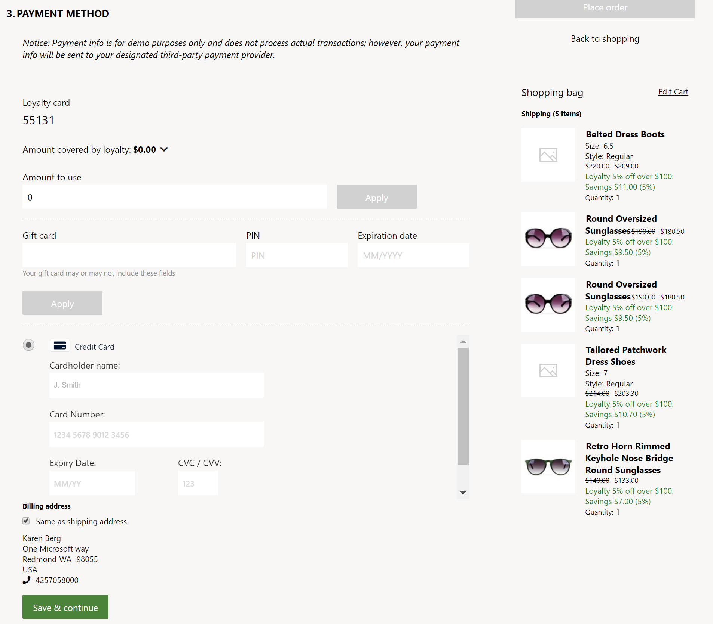
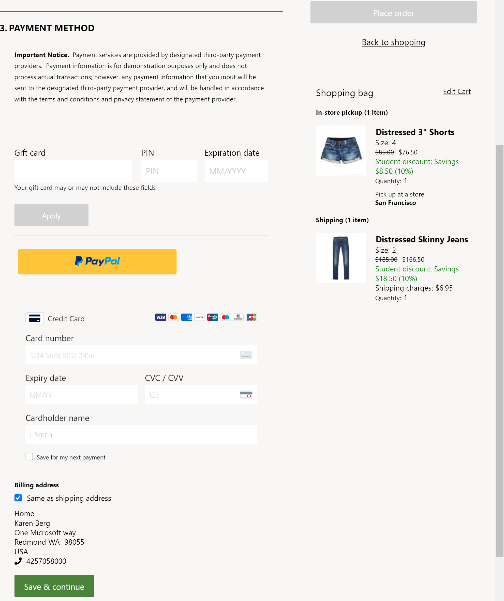
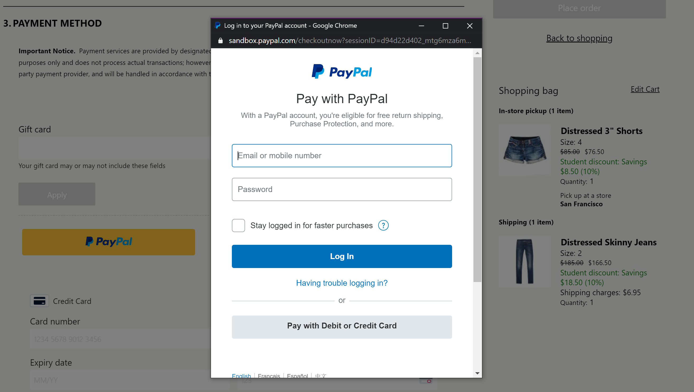
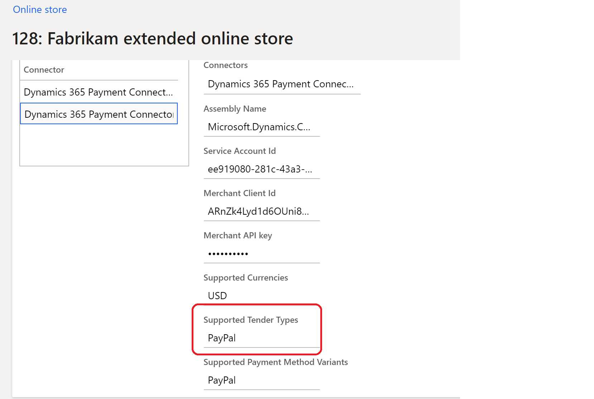

Zahlungsmodul
Important
Dynamics 365 Retail ist jetzt Dynamics 365 Commerce und bietet umfassende Handelsfunktionen für alle Kanäle – von E-Commerce über Shops bis hin zu Callcentern. Weitere Informationen zu diesen Änderungen finden Sie unter Microsoft Dynamics 365 Commerce.
In diesem Thema wird das Zahlungsmodul behandelt und beschrieben, wie es in Microsoft Dynamics 365 Commerce konfiguriert wird.
Das Zahlungsmodul ermöglicht es Debitoren, für eine Bestellung mit Kredit‑ oder Debitkarten zu bezahlen. Die Zahlungsintegration für dieses Modul wird vom Zahlungskonnektor von Dynamics 365 für Adyen gewährleistet. Weitere Informationen darüber, wie der Zahlungskonnektor für konfiguriert und eingerichtet wird, finden Sie unter Zahlungskonnektor von Dynamics 365 für Adyen (This is an external link).
Ab Commerce Release 10.0.14 wurde das Zahlungsmodul auch in den Dynamics 365-Zahlungsconnector für PayPal integriert, damit Kunden für Aufträge mit PayPal bezahlen können. Weitere Informationen über das Einrichten und Konfigurieren des Dynamics 365-Zahlungsconnectors für PayPal finden Sie unter Dynamics 365-Zahlungsconnector für PayPal (This is an external link).
Zahlungskonnektor von Dynamics 365 für Adyen
Das Zahlungsmodul hostet die Zahlungsinformationen, die über Adyen bereitgestellt werden, in einem HTML-Inlineframe (iFrame). Das Zahlungsmodul interagiert mit der Commerce Scale Unit, um die Adyen-Zahlungsinformationen abzurufen. Im Rahmen der Commerce Scale Unit-Interaktion kann das Zahlungsmodul die Bereitstellung von Rechnungsadressinformationen entweder im iFrame über Adyen oder als separates Modul zulassen. Im Fabrikam-Design wird die Rechnungsadresse als separates Modul aktiviert. Dieser Ansatz ermöglicht eine größere Flexibilität bei der Formatierung, da die Adresszeilen so gerendert werden können, dass sie den Zeilen der Lieferadresse ähneln.
Mit dem Zahlungsmodul können angemeldete Debitoren auch ihre Zahlungsinformationen speichern. Die Zahlungsinformationen und die Rechnungsadresse werden über den Adyen-Zahlungskonnektor gespeichert und verwaltet.
Das Zahlungsmodul deckt alle Auftragszuschläge ab, die nicht bereits durch Treuepunkte oder eine Geschenkkarte gedeckt sind. Wenn der Gesamtbetrag einer Bestellung vollständig durch Treuepunkte oder Gutschriften für Geschenkkarten gedeckt ist, wird das Zahlungsmodul ausgeblendet und der Debitor kann die Bestellung ohne diese aufgeben.
Der Adyen-Zahlungskonnektor unterstützt auch Starke Kundenauthentifizierung (SCA). Ein Teil der überarbeiteten Zahlungsdiensterichtlinie (PSD2) der Europäischen Union (EU) verlangt, dass Online-Käufer außerhalb ihres Online-Einkaufserlebnisses authentifiziert werden, wenn sie eine elektronische Zahlungsmethode verwenden. Während des Auftragsabschlussflows werden Kunden zu ihrer Banking-Website weitergeleitet und dann - nach der Authentifizierung- werden sie zurück zum Commerce-Auftragsabschlussflow geleitet. Während dieser Umleitung bleiben die Informationen, die ein Kunde während des Auftragsabschlussflows eingegeben hat (z. B. Lieferadresse, Lieferoptionen, Geschenkkarteninformationen und Treueinformationen), erhalten. Bevor Sie die Adyen-Zahlungsconnector-Funktion aktivieren können, muss der Zahlungsconnector für SCA in der Commerce-Zentralverwaltung konfiguriert sein. Weitere Informationen finden Sie unter Starke Kundenauthentifizierung mit Adyen (This is an external link). Diese Funktion war in Commerce Release 10.0.12 aktiviert.
Note
Für den Adyen-Zahlungsconnector kann das iframe-Modul im Zahlungsmodul nur gerendert werden, wenn Sie die Adyen-URL zur Zulassungsliste Ihrer Website hinzufügen. Um diesen Schritt abzuschließen, fügen Sie *.adyen.com zum child-src, Connect-src, img-src, script-src und style-src Anweisungen der Inhaltssicherheitsrichtlinie Ihrer Website hinzu. Weitere Informationen finden Sie unter Inhaltssicherheitsrichtlinie verwalten (This is an external link).
Die folgende Abbildung zeigt ein Beispiel für Geschenkkarten‑, Treuepunkt‑, Zahlungsmodule auf einer Auftragsabschlussseite.

Dynamics 365-Zahlungsconnector für PayPal
Ab Commerce Release 10.0.14 ist das Zahlungsmodul auch in den Dynamics 365 Zahlungsconnector für PayPal integriert. Weitere Informationen darüber, wie dieser Zahlungsconnector konfiguriert und eingerichtet wird, finden Sie unter Dynamics 365-Zahlungsconnector für PayPal (This is an external link).
Auf der Auftragsabschlussseite können Sie sowohl Adyen- als auch PayPal-Connectors konfigurieren lassen. Das Zahlungsmodul wurde um zusätzliche Eigenschaften erweitert, um leichter zu ermitteln, mit welchem Connector es arbeiten soll. Einzelheiten finden Sie in den Moduleigenschaften Unterstützte Zahlungsmitteltypen und Ist die Hauptzahlung in der folgenden Tabelle.
Wenn das Zahlungsmodul für die Verwendung des PayPal-Zahlungsconnectors konfiguriert ist, wird auf der Auftragsabschlussseite eine PayPal-Schaltfläche angezeigt. Beim Aufrufen durch den Kunden rendert das Zahlungsmodul einen iframe, das PayPal-Informationen enthält. Der Kunde kann sich anmelden und seine PayPal-Informationen in diesem iframe angeben, um seine Transaktion abzuschließen. Wenn ein Kunde mit PayPal bezahlt, wird der Restbetrag des Auftrags über PayPal in Rechnung gestellt.
Für den PayPal-Zahlungsconnector ist kein Abrechnungsadressmodul erforderlich, da alle abrechnungsbezogenen Informationen von PayPal in dessen iframe verarbeitet werden. Die Lieferadress- und Lieferoptionsmodule sind jedoch erforderlich.
Die folgende Abbildung zeigt ein Beispiel für zwei Zahlungsmodule auf einer Auftragsabschlussseite, eines mit dem Adyen-Zahlungsconnector und das andere mit dem PayPal-Zahlungsconnector konfiguriert. 
Die folgende Abbildung zeigt ein Beispiel für den PayPal-iframe, der über die PayPal-Schaltfläche aufgerufen wird. 
Zahlungsmoduleigenschaften
| Eigenschaftenname | Werte | Beschreibung |
|---|---|---|
| Überschrift | Überschriftentext | Eine optionale Überschrift für das Zahlungsmodul. |
| Höhe des iFrame | Pixel | Die iFrame-Höhe in Pixel. Die Höhe kann nach Bedarf geändert werden. |
| Rechnungsadresse anzeigen | True oder False | Wenn diese Eigenschaft auf True gesetzt ist, wird die Rechnungsadresse von Adyen im Zahlungsmodul iFrame bereitgestellt. Wenn sie auf False festgelegt ist, wird die Abrechnungsadresse nicht von Adyen bereitgestellt, und ein Commerce-Benutzer muss ein Modul konfigurieren, um die Abrechnungsadresse auf der Auftragsabschlussseite anzuzeigen. Für den PayPal-Zahlungsconnector hat dieses Feld keine Auswirkungen, da die Abrechnungsadresse vollständig innnerhalb von PayPal gehandhabt wird. |
| Zahlungsstil überschreiben | Cascading Style Sheets (CSS)-Code | Da das Zahlungsmodul in einem IFrame gehostet wird, sind die Styling-Funktionen eingeschränkt. Mit dieser Eigenschaft können Sie ein gewisses Maß an Styling erzielen. Um Site-Stile zu überschreiben, müssen Sie den CSS-Code als Wert dieser Eigenschaft einfügen. Site Builder CSS-Überschreibungen und Stile gelten nicht für dieses Modul. |
| Unterstützte Zahlungsmitteltypen | Zeichenfolge | Wenn mehrere Zahlungsconnectors konfiguriert sind, sollten Sie die unterstützte Zeichenfolge für den Zahlungsmitteltyp angeben, wie in der Zahlungsconnector-Konfiguration der Commerce-Zentralverwaltung definiert (siehe folgendes Bild). Wenn dies leer bleibt, wird standardmäßig der Adyen-Zahlungsconnector verwendet. Hinzugefügt in Commerce-Version 10.0.14. |
| Ist primäre Zahlung | True oder False | Wenn True werden alle Fehlermeldungen vom primären Zahlungsconnector auf der Auftragsabschlussseite aus generiert. Wenn sowohl Adyen- als auch PayPal-Zahlungsconnectors konfiguriert sind, legen Sie Adyen auf True fest, das in Commerce Release 10.0.14 hinzugefügt wurde. |
Die folgende Abbildung zeigt ein Beispiel, bei dem der Wert Unterstützte Zahlungsmitteltypen in der Zahlungsconnectorkonfiguration in der Commerce-Zentralverwaltung auf „PayPal“ gesetzt ist. 
Rechnungsadresse
Ein Abrechnungsadressmodul kann auf der Auftragsabschlussseite verwendet werden, wenn die Abrechnungsadresspositionen des Adyen-Zahlungsconnectors nicht ausreichend mit dem Erscheinungsbild der restlichen Website übereinstimmen.
Um ein Abrechnungsadressmodul auf der Auftragsabschlussseite zu verwenden, wenn das Zahlungsmodul in den Adyen-Zahlungsconnector integriert ist, legen Sie die Eigenschaft Abrechnungsadresse anzeigen auf False fest, damit ein dediziertes Abrechnungsadressmodul verwendet werden kann, anstatt der standardmäßigen Adyen-Abrechnungsadresse. In diesem Fall sollte der Website-Autor ein Abrechnungsadressmodul auf der Auftragsabschlussseite einfügen. Der Adyen-Zahlungsconnector lässt auch die Fähigkeit zu, die Lieferadresse als Abrechnungsadresse zu verwenden, um die Anzahl von Schritten für den Websitebenutzer zu minimieren.
Ähnlich wie bei Zahlungsmodulen wurde eine Eigenschaft Unterstützte Zahlungsmitteltypen dem Abrechnungsadressmodul in Commerce Release 10.0.14 hinzugefügt. Der Wert dieser Eigenschaft sollte mit dem im Zahlungsmodul angegebenen Wert identisch sein, um sicherzustellen, dass sie zusammen funktionieren. Für den Adyen-Zahlungsconnector sollten sowohl das Zahlungsmodul als auch das Abrechnungsadressmodul diesen Wert leer lassen (der Standardstatus). Für den PayPal-Connector ist kein dediziertes Abrechnungsadressmodul erforderlich. Bei anderen Typen von Zahlungsconnectors sollte die Zeichenfolge wie in der Commerce-Zentralverwaltung konfiguriert bereitgestellt werden.
Einer Checkout-Seite ein Zahlungsmodul hinzufügen, und die benötigten Eigenschaften einrichten
Ein Zahlungsmodul kann nur zu einem Checkout-Modul hinzugefügt werden. Weitere Informationen zum Konfigurieren eines Zahlungsmoduls für eine Checkout-Seite erhalten Sie unter Checkout-Modul.
Wenn sowohl Adyen- als auch PayPal-Zahlungsconnectors benötigt werden, fügen Sie beide Module zum Zahlungsbereich hinzu. Stellen Sie sicher, dass der Eigenschaftswert Unterstützte Zahlungsmitteltypen für PayPal konfiguriert ist und lassen Sie ihn für Adyen leer. Legen Sie auch die Eigenschaft Ist primäre Zahlung für Adyen auf True fest.
Zusätzliche Ressourcen
Zahlungskonnektor von Dynamics 365 für Adyen (This is an external link)
Dynamics 365-Zahlungsconnector für PayPal (This is an external link)
Starke Kundenauthentifizierung mit dem Adyen-Konnektor (This is an external link)